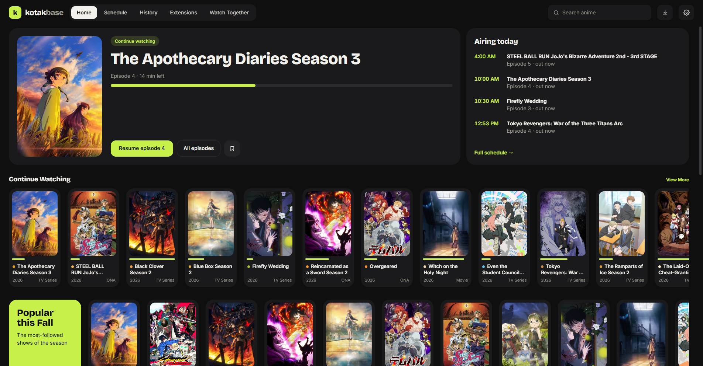

Anime, playing the moment you press play.
Kotakbase finds a release, streams it straight from the torrent and keeps your AniList up to date. No waiting for downloads, no accounts, no ads.
Free forever. The whole app is open source on GitHub.
languages, picked from your system: English, Ukrainian, Kazakh, Russian, German, Spanish, Chinese and Japanese.

Everything for watching anime
Streams right away
Episodes play while they download, and the next one is ready before this one ends.
AniList sync
Sign in once and your progress, list and ratings update as you watch.
Watch Together
Share an invite link and watch in sync with friends, with a chat beside the video.
Offline downloads
Download an episode or a whole season and watch it later without the internet.
Skip intros
One click past the opening and ending, from the file's chapters or AniSkip.
Proper subtitles
Styled signs and songs with the release's own fonts, and mpv for Dolby and DTS audio.
Your choice of sources
Works with Hayase-compatible extensions that you choose and install.
Schedule and history
See what airs this week and pick up exactly where you left off.
Discord status
Optionally show friends what you're watching, right on your Discord profile.
Download
Windows
Windows 10 or 11, 64-bit. Kotakbase updates itself when a new version is out.
Download for WindowsLinux
An AppImage for 64-bit Linux. For Dolby and DTS audio, install mpv from your package manager.
Download AppImageAll versions and release notes are on GitHub Releases.
Free code signing provided by SignPath.io, certificate by SignPath Foundation. See the code signing policy.